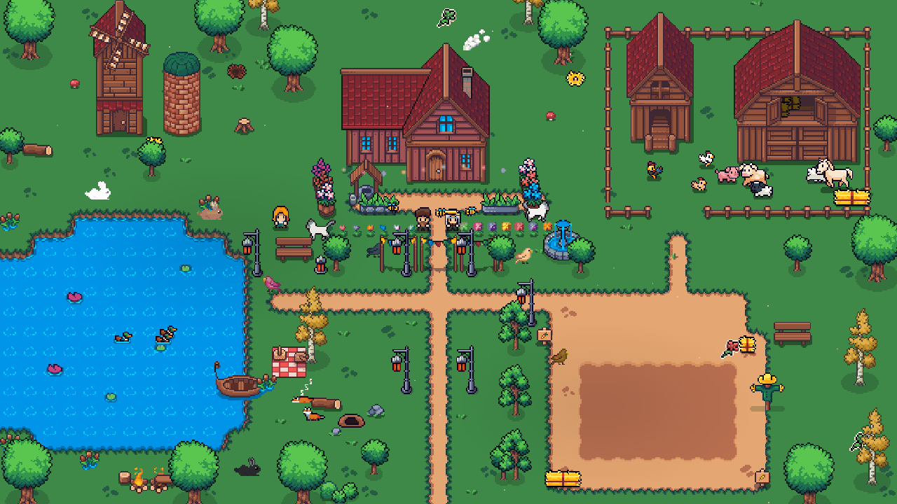
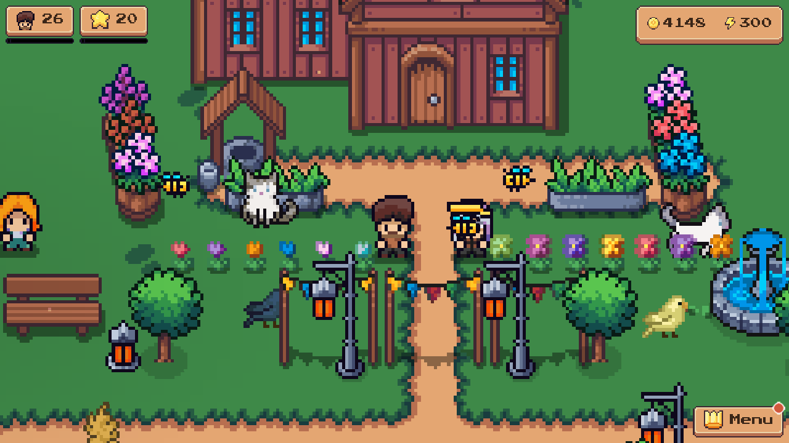
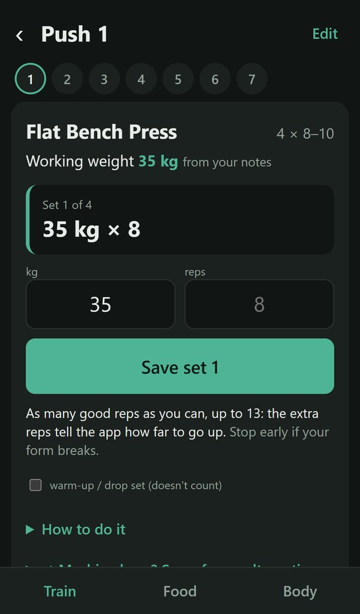
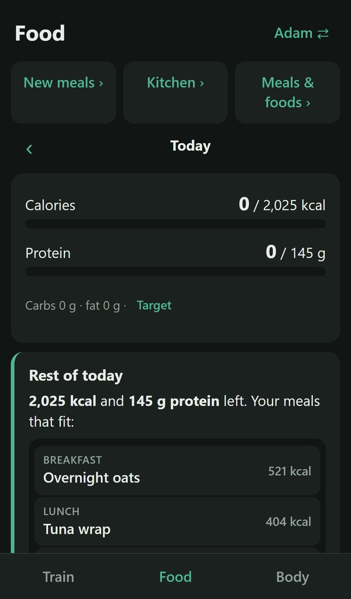

PLAYER 1 · OFF THE CLOCK
Hi, I'm Adam. Outside work, gaming is a passion.
Gaming really took off for me with Halo on the original Xbox, and more recently the Destiny franchise. I still play most days with my wife and friends. Lately I've been trying to turn ideas I have into my own real games. Here's what I'm working on.
NOW BUILDING
Things I'm making for fun.
AI helps me build faster, but I'm careful about where it goes. Wherever I can, I pay real artists for assets, textures and sound, buying packs from independent creators instead of generating everything.
Swaine's Farm 🌾
Still growing

I made this as a surprise for my wife, Tish. I wanted a fun way to keep on top of everyday life (exercise, chores, medication, date nights) without another to-do app, so I built us a whole game and companion app instead.
It's a two-player pixel-art farming game where real life is the controller. Every task we log earns XP, and over about two months that XP grows a shared farm from a few chickens into a working homestead.
The real-life loop
- A daily board of small quests, streaks, and weekly couple goals
- One-tap routines like "Morning" and "Cat care", plus a teamwork bonus when we both log
- Exercise counts as kilometres on a virtual journey from home to Paris and on to Rome, with postcards along the way
- Badge ladders for health, exercise, chores, goals and time together
The farm
- Animals, a barn and a windmill that arrive as the farm levels up, plus a garden that grows a day for every day we log
- Fishing, cooking, foraging, bug catching, stargazing, and a rowing boat for the pond
- A world map with five more places to unlock, each with its own fish, locals and puzzle
- A shop, a wardrobe full of hats and armour, and decorating the house and farm however we like
The personal touches
- Our four real cats live on the farm, and every task we log earns a jigsaw piece of a photo of one of them
- Riddler (the cat in the bow tie) leaves treasure-hunt riddles hidden around the farm
- Secret places to discover, Halloween, Christmas, spring and summer events, and a birthday week just for Tish
- Hayley, the farm's previous owner, shows you around and keeps you up to date
How it's built
- Built in Godot, running in the browser, and hosted on our home server in Docker
- One shared farm across both phones and the PC, with live presence (you see each other walking around) and a three-way merge so saves never clash
- A companion phone app for logging tasks in seconds, which works offline and includes an "Ask Claude" button to size up new tasks
- Character portraits made with a local AI image pipeline (ComfyUI), paid pixel-art packs, and CC0 music and sound
30 farm levels · 39 unlocks · 7 treasure hunts · 2 very demanding playtesters · 4 cats
Health Log 💪
Early development

A phone app for the gym and for food, built so I'd stop keeping workouts in my notes app. It's still early days, but I'm already using it for every session.
It remembers what I lifted last time and suggests the weight and reps for each set (progressive overload), so I don't have to work it out between sets. On the food side, it tracks calories and protein against a daily target, then suggests meals from our own recipes to fill the rest of the day.
Training
- Push / pull / legs rotation that knows which workout is next
- Set-by-set suggestions that go up, hold or drop depending on how the last set went, plus personal record alerts
- Exercise photos and how-to steps, and a "machine busy?" button that swaps in an alternative for the same muscles
Food
- Separate profiles for me and Tish, each with their own target
- Barcode scanning, with label values from Open Food Facts
- A shared kitchen list, and meal ideas from Claude based on what we like and what's actually in the cupboard
Weigh-ins come straight from our smart scale through Apple Health, and it runs on our home server like Swaine's Farm, with updates deployed automatically whenever the tests pass.
Looking for the professional side? Here's my work portfolio →